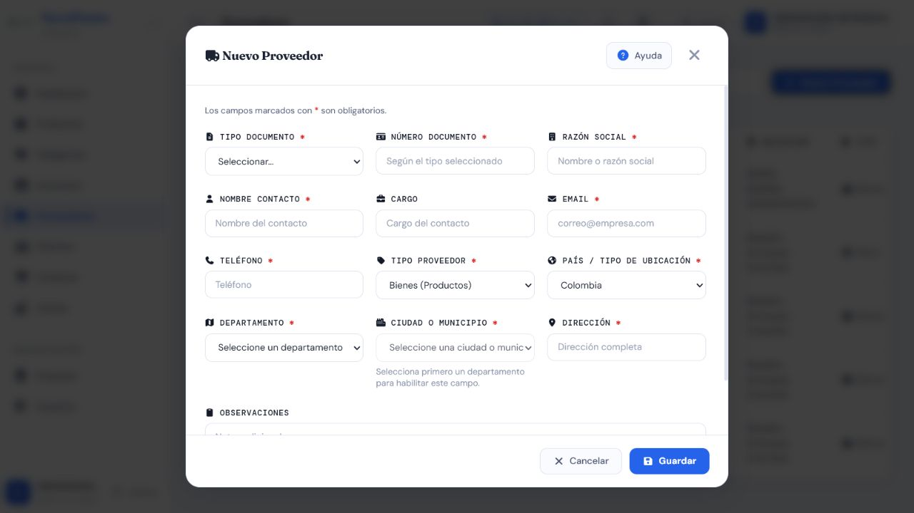
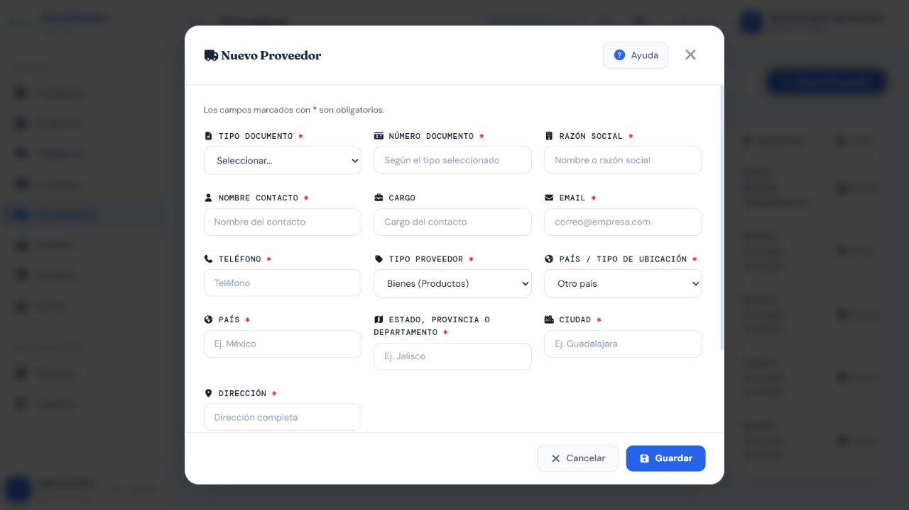

Casos de prueba — Proveedores
Prefijo: TC-PRV · Cobertura mínima: 5 casos · Ejecución final: 4 aprobados, 1 fallido · Fecha: 8 de agosto de 2026
Alcance
Valida creación, edición, ubicación, estado y eliminación de Proveedores, que luego se seleccionan al registrar Compras. Las operaciones reales están restringidas a Administrador y Supervisor.
Matriz de casos
| ID | Nombre | Tipo | Funcionalidad que verifica | Precondiciones y rol | Datos ficticios | Resultado esperado | Automatización existente | Falta automatización | Evidencia | Prioridad |
|---|---|---|---|---|---|---|---|---|---|---|
| TC-PRV-001 | Crear proveedor válido | Positivo | Alta con identidad comercial, documento, contacto y ubicación válidos | Administrador o Supervisor | Suministros Demo S.A.S., NIT ficticio, teléfono y correo reservados para prueba |
HTTP 201; normalización prevista y registro visible | A — pruebas automatizadas aprobadas y alta UI/API E2E ejecutada |
Consolidar el flujo E2E en una prueba automatizada | AUTO + API | Alta |
| TC-PRV-002 | Rechazar duplicados y contacto inválido | Negativo | Unicidad comercial y mensajes naturales; teléfono y campos semánticos | Proveedor equivalente existente; Administrador o Supervisor | Razón social con distintas mayúsculas; teléfono con letras/especiales o demasiado largo | HTTP 400 por campo; no crea duplicado | A — métodos test_no_permite_razon_social_duplicada_sin_importar_mayusculas, test_duplicados_exactos_devuelven_mensajes_naturales_en_espanol, pruebas de teléfono y test_campos_semanticos_invalidos_se_rechazan_por_campo |
No para validaciones cubiertas; falta confirmar interfaz | AUTO + API; captura compartida si se requiere error visual | Alta |
| TC-PRV-003 | Crear y editar ubicación Colombia/exterior | Positivo / integración | Catálogo departamento-municipio y cambio a campos manuales para otro país | Administrador o Supervisor | Colombia: Antioquia/Medellín; exterior: país/estado/ciudad ficticios válidos | Combinación colombiana canónica; exterior normalizado; edición conserva datos válidos | A — test_crear_y_editar_proveedor_colombiano, test_rechaza_combinacion_colombiana_invalida, test_crear_y_editar_proveedor_extranjero, test_proveedor_extranjero_numerico_se_rechaza y test_edicion_parcial_conserva_ubicacion_legacy |
Parcial: falta automatización DOM del formulario; ambos modos se verificaron manualmente | AUTO + API + MAN; Colombia y otro país | Alta |
| TC-PRV-004 | Cambiar estado y excluir proveedor inactivo de Compras | Integración / permisos | Activación/inactivación y efecto en el selector de Compras | Proveedor existente; Administrador o Supervisor; compra nueva sin guardar | Proveedor ficticio activo que pasa a inactivo | Cambio exitoso; el inactivo no se usa en una compra nueva; datos históricos permanecen | M — no se localizó prueba automatizada |
Sí: estado, selector y preservación histórica | AUTO + API + MAN | Alta |
| TC-PRV-005 | Eliminar proveedor libre y proteger el relacionado | Permisos / integración | Eliminación controlada y matriz de roles | Proveedor sin compras y proveedor con compra; rol autorizado y Vendedor/Bodega | Dos proveedores ficticios | Libre: resultado según contrato; relacionado: rechazo controlado sin perder compra; rol excluido: 403 | M — no se localizó prueba automatizada |
Sí: dependencia y permisos | AUTO + API + DB-R | Alta |
{kind=link}
{kind=link}
Evidencia visual mínima
Las dos capturas vigentes muestran el formulario vacío en modo Colombia y en modo Otro país. El cambio se realizó sin guardar el proveedor. Los duplicados, estados y dependencias deben respaldarse con AUTO/API y, si aplica, DB-R.


Riesgos pendientes
- Existe buena cobertura de validación, pero falta el ciclo de estado y eliminación.
- Debe verificarse que Compras no permita seleccionar o enviar un proveedor inactivo.
- La cobertura de ubicación frontend actual es de funciones/código fuente, no de interacción DOM.
Resultado final de ejecución
| Total | Aprobados | Fallidos |
|---|---|---|
| 5 | 4 | 1 |
Alta, validaciones, ubicación y estado aprobaron. TC-PRV-005 falló solo para un Proveedor relacionado: el endpoint devolvió 500 en lugar de un rechazo controlado (BUG-PRV-001). Ver resultados trazables.